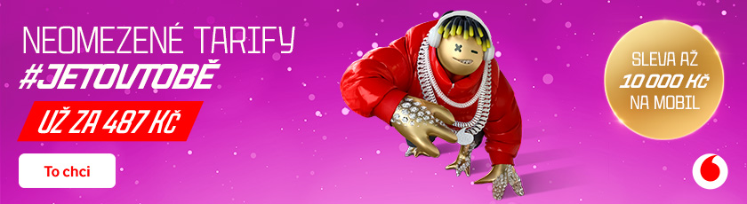

Před rokem byl Martin „Dytor“ Handl posazený na lavičku a na finále loňské sezóny chyběl, o to větší hlad po úspěchu letos měl. „Nechápu, že vyhraje skoro každý nevýhodný duel,“ utrousil na jeho adresu Sebastian „beastik“ Daňo ze SINNERS a Dytor ve své reakci označil svůj výkon za životní. Vygradování jeho výkonů mu k týmové trofeji vyneslo i individuální ocenění KFC MVP.
Dynamo Eclot přiletělo do Česka krátce před startem Tipsport MČR CS z Číny, na výkonu hráčů ale únava nebyla znát. V semifinále dominantně přehráli Team Brute a celá pětice byla na čele individuálních statistik.
Finálovým soupeřem byli UNiTY, jejichž kádr také obsahuje neuvěřitelně zručné střelce a výjimečné výkony byly na straně DNE potřeba. Ty se ale podařilo opět doručit všem pěti hráčům a boj o KFC MVP byl napínavý.
Jeden hráč ale svou efektivitou a efektností ve finále vyčníval. Martin „ Dytor“ Handl započal svoji show už na první mapě, kde v řeči čísel vládl. Brněnské publikum dostal do varu především svým 1v2 clutchem.
Na Anubisu se mu sice tolik nevedlo a Dust II byl suverénní týmovou jízdou, ale na rozhodujícím Ancientu už byl opět hráčem číslo jedna. V průběhu let se z něj stal hráč pro velká utkání, jak po Číně potvrdil i doma.
Za celou finálovou sérii se ve statistických metrikách HLTV.org přetahoval hlavně s Vítem „ nbqq“ Pohlotem a Raulem „ Blytz“ Gligorem. Úderná síla trojice riflerů byla jedním z klíčů na cestě Dynama Eclot za titulem.
Ocenění KFC MVP by si zasloužili všichni tři, ale byl to právě Dytor, kdo uspěl v hlasování veřejnosti. Jeho hra na pohled baví, což fanoušci vždy ocení. Vynikající sezónu zakončil na výši po týmové i individuální stránce.
Štítky: Counter-Strike 2, Tipsport CS, MČR, Dynamo Eclot